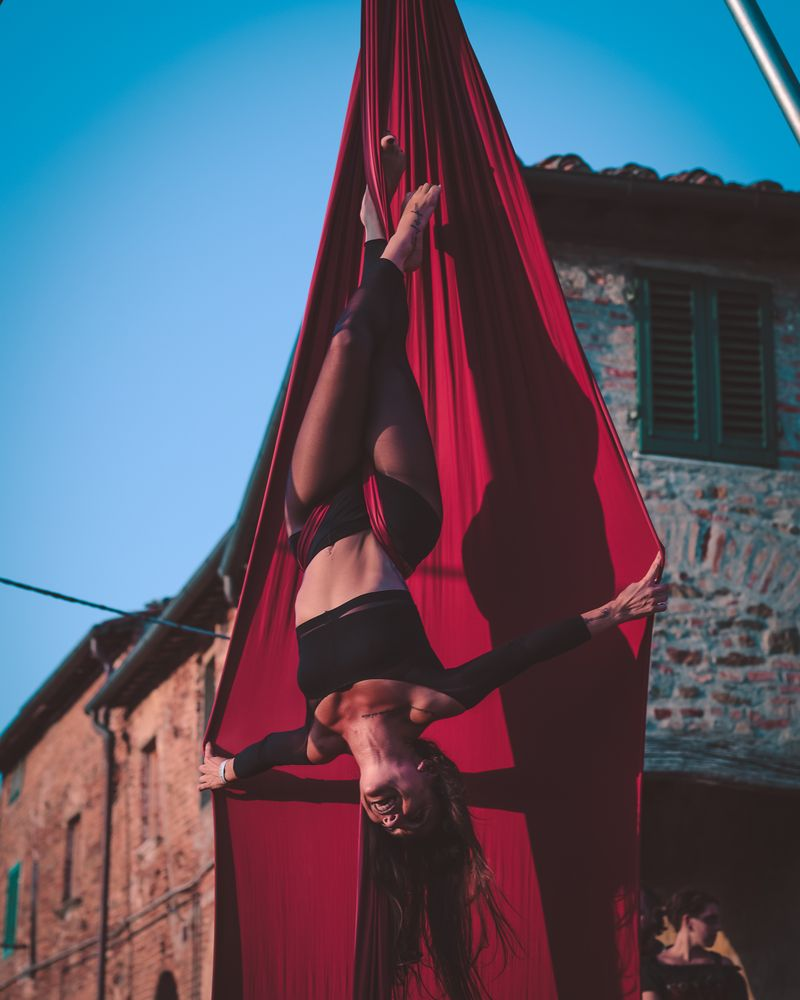
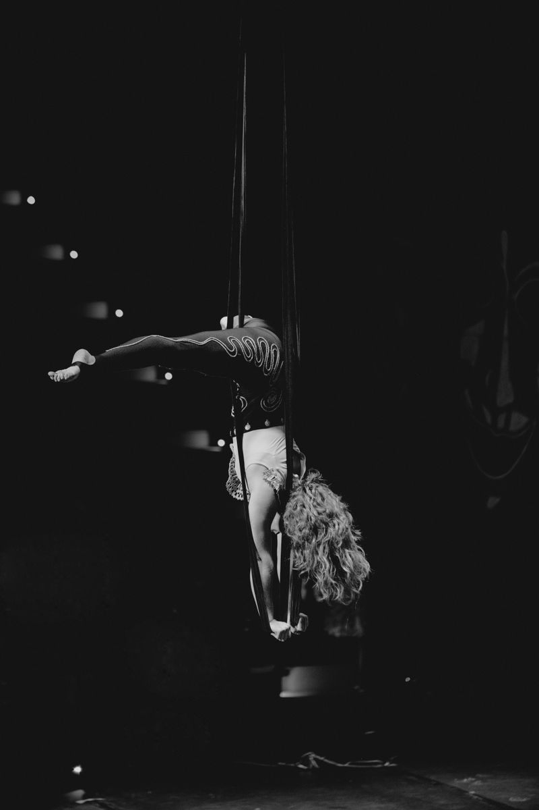
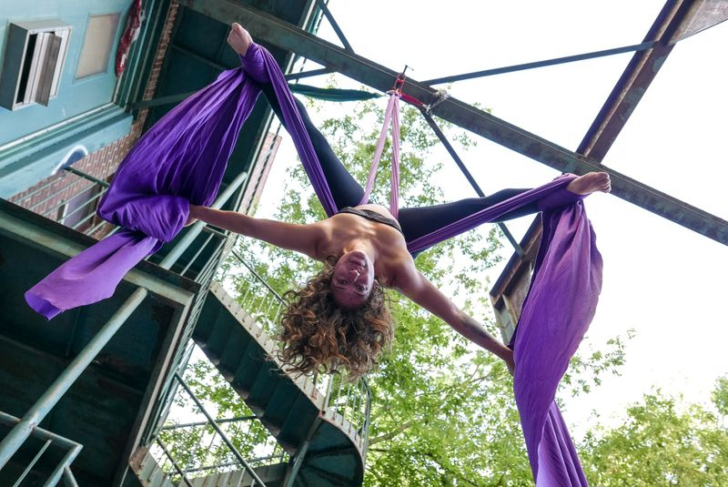
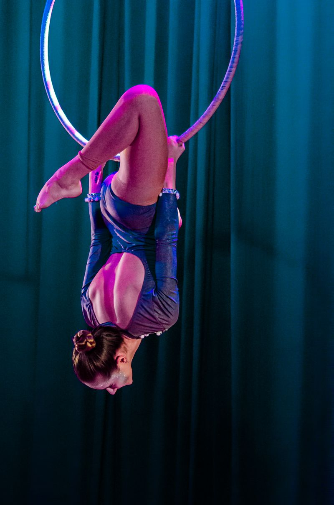

Classes · Aerial arts
Find your way into the air.
Explore aerial arts at your own pace — building strength, control and the confidence to move off the ground.
Strength · Control · Expression

Ways to train
Three ways in.
Aerial arts are usually learned through a mix of formats. Ask us which are currently running.
-
First steps
An introduction to the fabric: grip, simple climbs and positions close to the floor.
-
Skill building
Ongoing practice that adds new moves and links them into sequences.
-
Guided practice
Time on the apparatus to repeat, refine and ask questions as you go.
Your learning journey
Every climber moves through three stages.
-
Discover
Meet the apparatus. Learn how to grip, hold and move safely near the ground.
-
Develop
Add new moves, build strength and start linking skills together.
-
Refine
Polish technique and flow, and explore your own way of moving.
Everyone progresses at their own pace — there is no set timeline for moving between stages.
The practice.
What aerial training feels like: slow, repeatable work that turns effort into movement.


-
Body awareness
Knowing where every limb is, even upside down.
-
Coordination
Hands, feet and fabric working in sequence.
-
Expression
Finding shape, line and a way of moving that is yours.
-
Deliberate repetition
Small moves, repeated well, before anything new.
Ready to explore?
Tell us about your experience and what you'd like to try. We'll point you to a good place to start.
Get in touch